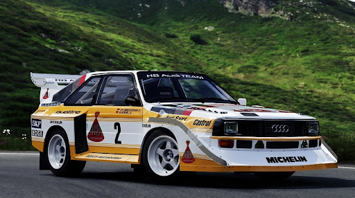
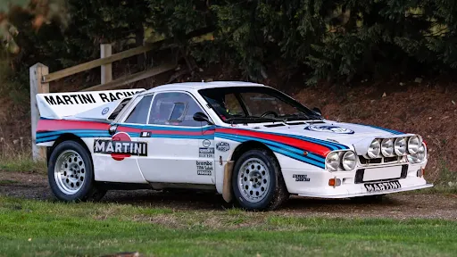
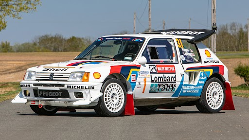
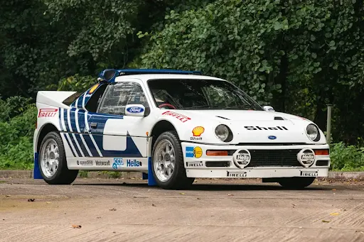

Grupo B: A era de ouro do WRC
A era mais perigosa, insana e brilhante da história do automobilismo mundial.
O que foi o Grupo B? (1982 – 1986)
Imagine um cenário onde não existem limites de potência, onde o peso dos carros é
reduzido ao mínimo absoluto e onde os materiais usados vêm diretamente da engenharia aeroespacial. Isso foi o Grupo B.
Criado pela FIA em 1982 para atrair grandes montadoras, o regulamento exigia a produção de apenas 200 exemplares de rua
para homologação. Isso abriu a "Caixa de Pandora". As marcas pararam de adaptar
carros de passeio e começaram a construir
protótipos de corrida com carcaças de plástico.
Em apenas quatro anos, os carros saltaram de 250 cv para potências estimadas em mais de 550 cv. Combinados com um peso de
menos de 1000 kg, eles eram capazes de acelerar no cascalho mais rápido do que
um carro de Fórmula 1 da época fazia no asfalto.
O Grupo B não era apenas uma competição; era um experimento científico de sobrevivência.
As 5 Lendas que Definiram a Era
1. Audi Sport Quattro S1 E2: O Monstro Alado
Se o Grupo B tivesse um rosto, seria o deste Audi. Com suas asas gigantescas projetadas para gerar pressão aerodinâmica e manter
o carro no chão, o S1 E2 foi a evolução final da tração integral.

- A Inovação: Introduziu o sistema anti-lag, que mantinha o turbo cheio mesmo quando o piloto tirava o pé do acelerador, criando
aqueles estouros icônicos pelo escapamento.
- O Desafio: O motor de 5 cilindros ficava pendurado na frente do eixo dianteiro, o que tornava o carro difícil de guiar, mas imbatível
em linha reta.
Clique aqui para mais informações
2. Lancia 037: O Último dos Moicanos
Enquanto todos corriam para a tração 4x4, a Lancia insistiu na tração traseira com o 037. Foi o último carro "RWD" a vencer o título mundial (1983).

- A Estratégia: Extremamente baixo e leve, o 037 era cirúrgico em asfalto seco. A Lancia chegou a espalhar sal na pista em rallies de neve para
derreter o gelo e dar vantagem ao seu carro de tração traseira. É a personificação da malandragem italiana no esporte.
Clique aqui para mais informações
3. Peugeot 205 T16: A Eficiência Letal
Sob o comando de Jean Todt (que depois levaria a Ferrari à glória com Schumacher), o 205 T16 "limpou" os campeonatos de 1985 e 1986, provando que a engenharia
inteligente vencia a força bruta.

- O Domínio: Sob o comando de Jean Todt (que depois levaria a Ferrari à glória com Schumacher), o 205 T16 "limpou" os campeonatos de 1985 e 1986, provando que,
a engenharia inteligente vencia a força bruta.
Clique aqui para mais informações
4. Lancia Delta S4: O Auge da Complexidade
Quando o 037 não era mais suficiente, a Lancia criou o S4. Foi o carro mais complexo da era, utilizando Twincharging: um compressor volumétrico para eliminar o atraso
em baixas rotações e um turbocompressor para potência máxima.

- O Drama: O S4 era tão rápido que os pilotos diziam que seus cérebros não conseguiam processar as curvas na velocidade em que elas chegavam. Foi o acidente fatal
de um S4 na Córsega que ditou o fim imediato da categoria.
Clique aqui para mais informações
5. Ford RS200: O Chassi de F1 na Lama
Ao contrário dos rivais que pareciam carros de rua modificados, o RS200 tinha um design futurista e único. Foi construído com materiais compostos e um chassi projetado por engenheiros de Fórmula 1.

- O Potencial Perdido:O RS200 tinha o melhor equilíbrio de chassi da categoria, mas problemas de confiabilidade e o banimento precoce do Grupo B impediram que ele mostrasse todo o seu brilho.
Hoje, é um dos itens de colecionador mais caros do mundo.
Clique aqui para mais informações
O Fim de uma Era: Quando a Velocidade Superou a Razão
O Grupo B não morreu por falta de audiência ou investimento. Ele morreu porque se tornou ingovernável. Em 1986, o limite entre o espetáculo e a tragédia desapareceu, e três eventos principais selaram
o destino desses monstros mecânicos:
1. O Massacre de Sintra (Rally de Portugal, 1986)
- O primeiro grande golpe veio em solo português. Naquela época, a multidão ficava a centímetros dos carros, formando "paredes humanas" nas estradas. O piloto local Joaquim Santos, ao tentar desviar de espectadores
que estavam no meio da pista, perdeu o controle de seu Ford RS200 e avançou sobre a multidão.
2. A Tragédia de Henri Toivonen (Tour de Corse, 1986)
- Apenas dois meses depois, o mundo do rally parou. Henri Toivonen, o piloto mais talentoso da época, liderava o Rally da Córsega com seu Lancia Delta S4. Em uma curva sem proteção, o carro saiu da estrada,
despencou em um barranco e explodiu instantaneamente.
3. O "Limite Humano"
- Após o acidente de Toivonen, a FISA (hoje FIA) anunciou o banimento do Grupo B em menos de 24 horas. Médicos e especialistas chegaram a uma conclusão assustadora: os reflexos humanos não eram rápidos
o suficiente para processar informações a 200 km/h em estradas de terra estreitas. Os pilotos sofriam de "visão de túnel" e fadiga mental extrema após poucos minutos de prova.
O Pós-Grupo B: O Surgimento do Grupo A
- Em 1987, as regras mudaram drasticamente. O Grupo B foi substituído pelo Grupo A, que exigia carros muito mais próximos dos modelos de série, com potência limitada a cerca de 300 cv e exigência de
5.000 unidades produzidas para as ruas. Foi nessa era que nasceram ícones como o Lancia Delta Integrale e o Subaru Impreza.